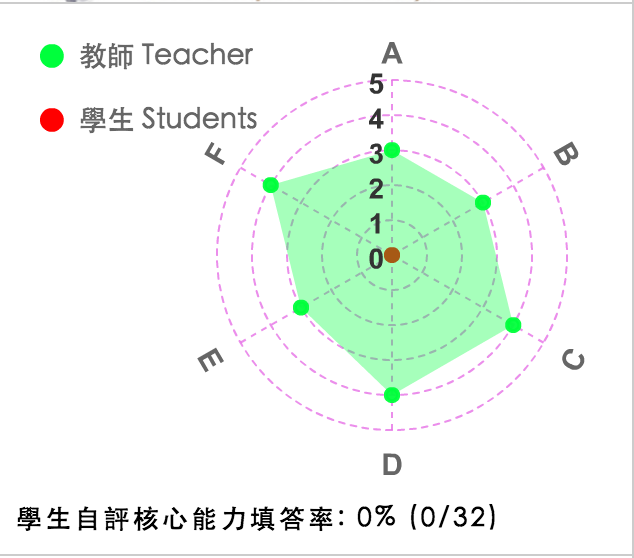
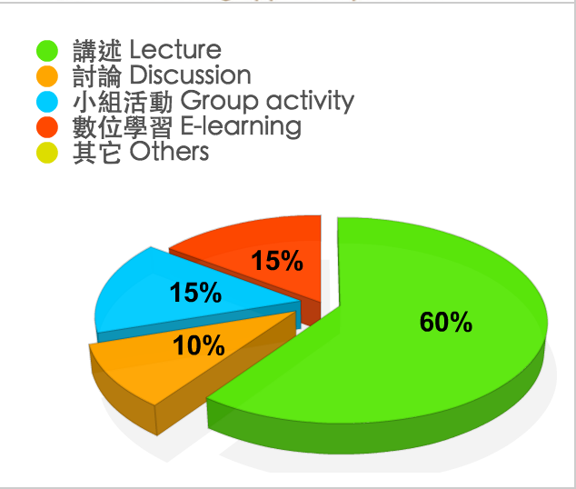

103 學年 第 2 學期
(中 Ch.)Ｗeb程式設計
(英 Eng.)Web Programming
余能豪
群修
3.0
限學程同學方得修習。
本課程旨在介紹WWW的基本運作原理並以其為平台開發應用程
式，包含HTML5/CSS3動態網頁製作、網頁物件模型(DOM)、
JavaScript程式設計與雲端應用等。
本課程涵蓋網路平台之最新技術如HTML5, CSS3, Javascript,
JSON, JQuery等，並介紹國內外網站及網路行銷活動範例，
培養學生網頁應用程式之開發能力及資訊架構設計能力，最後能
設計兼具功能與美感的動態網站。
課堂作業(35%) 、期中作業(20%)及期末實作成品成果展示(30%)
. Eric Freeman, Elisabeth Robson(2011), Head First HT
ML5 Programming: Building Web Apps with JavaScrip
t, O'Reilly
. Crockford Douglas, JavaScript: The Good Parts, O'
Reilly
N/A

能力項目說明：
A.具備發現與解決問題之能力
B.具備敘事與美學能力
C.具備科技研發與系統開發能力
D.具備團隊合作力
E.具備人文關懷與社會參與情操
F.具備企劃整合與溝通能力
